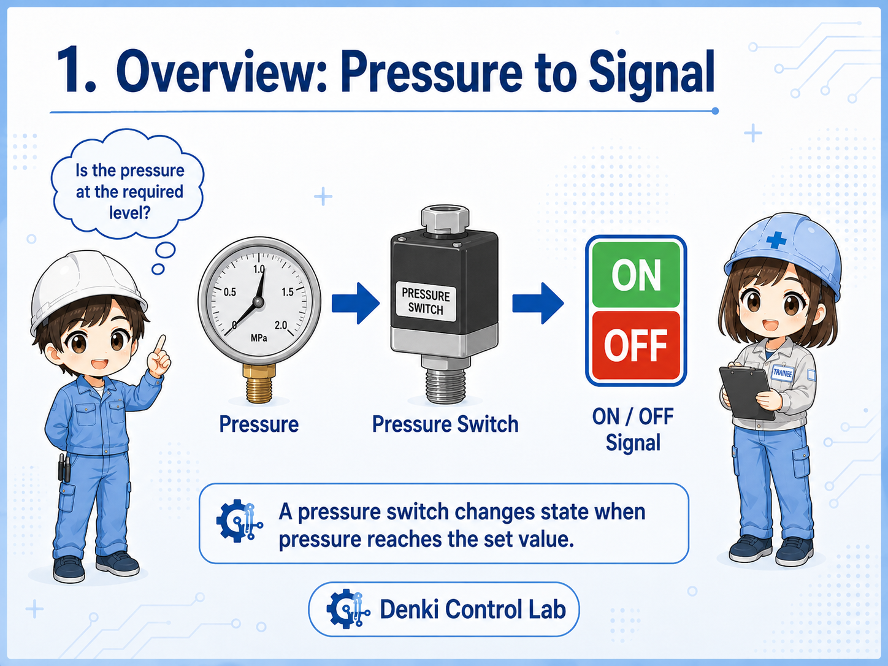
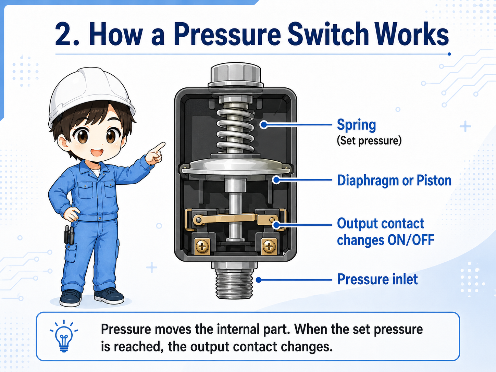
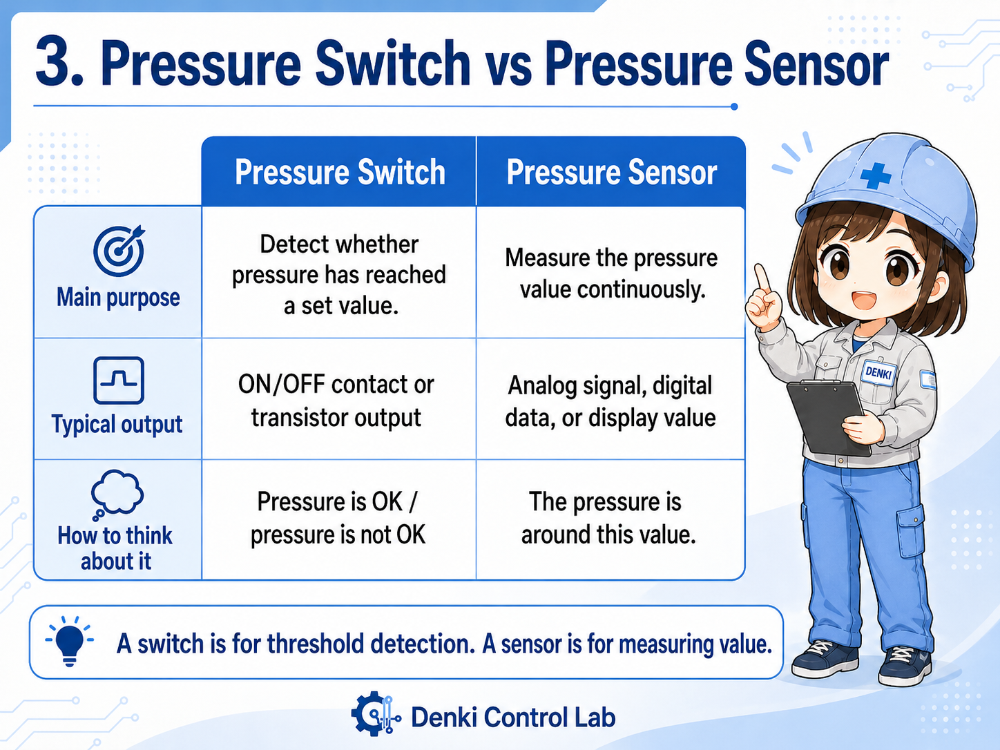
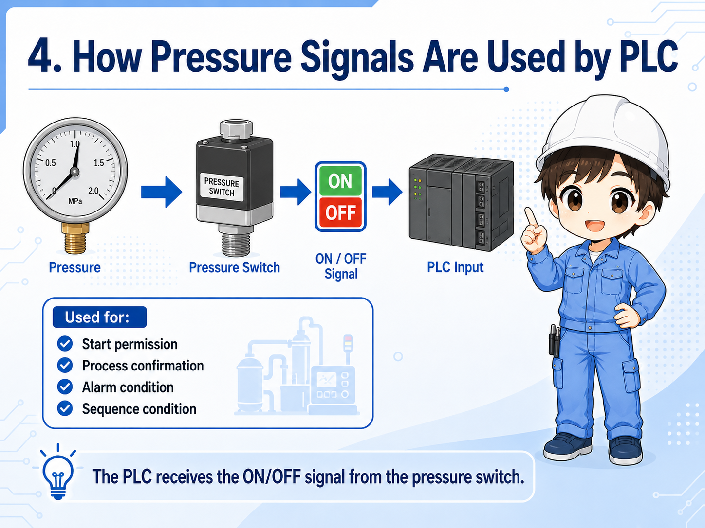
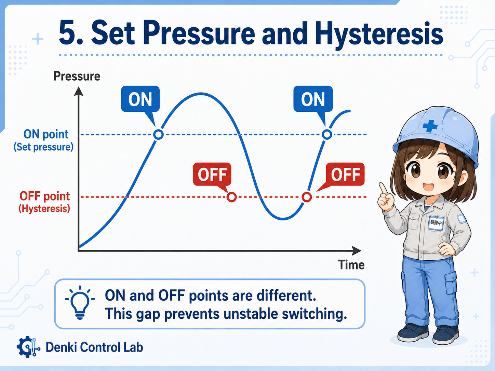
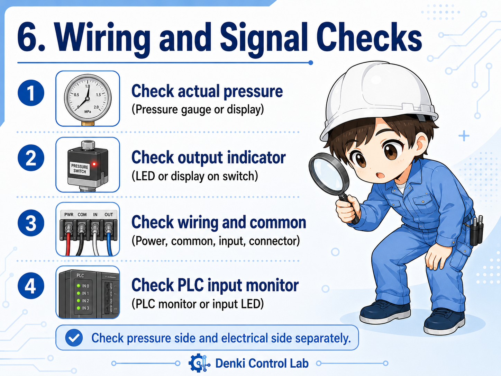
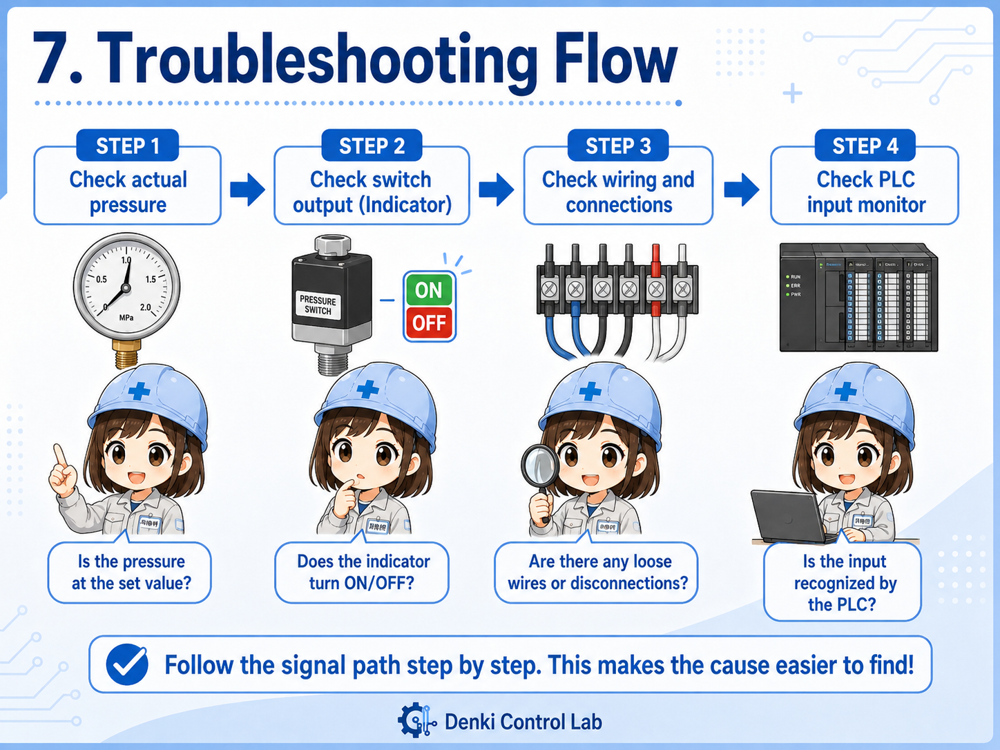

1. Basic idea: a pressure switch turns pressure into a simple signal
Think of it as a device that answers one practical question: “Has the pressure reached the required level?”
A pressure switch is used to detect whether pressure has reached a certain value. When the pressure crosses the set point, the internal contact changes state. That contact change can be used by a relay circuit, a PLC input, or another control device.
In many machines, the pressure switch is not trying to measure pressure in fine detail. Instead, it provides a simple ON/OFF signal. For example, it may turn ON when air pressure is high enough, or turn OFF when pressure drops below a safe level.

The key point is not “what is the exact pressure?” but “has the pressure reached the level needed for the machine to continue?”
So it is like a yes/no signal for pressure, not always a detailed measuring instrument.
2. How a pressure switch works
A pressure switch reacts to pressure applied to a diaphragm, piston, or sensing element inside the device.
The internal structure depends on the model, but the basic action is similar. Pressure enters the pressure port. That pressure moves a mechanical or electronic sensing part. When the movement reaches the adjusted point, the electrical contact changes.
In simple mechanical types, the pressure may push a diaphragm or piston against a spring. The spring force is related to the set pressure. When the pressure force becomes strong enough, the switch mechanism operates.
1. Pressure is applied
Air, hydraulic pressure, or fluid pressure reaches the switch port.
2. Internal part moves
A diaphragm, piston, or sensor element responds to the pressure.
3. Contact changes
The output turns ON or OFF and the control circuit receives the signal.

Pressure switch logic is usually easier to understand from the output side
On site, you often check whether the output contact or PLC input changes at the expected pressure. If it does not change, the cause may be pressure, adjustment, wiring, device failure, or PLC input conditions.
3. Pressure switch vs pressure sensor
A pressure switch gives a threshold signal. A pressure sensor usually gives a measured value.
The words “pressure switch” and “pressure sensor” are sometimes used loosely, but they are not always the same. A pressure switch is commonly used for ON/OFF detection at a set pressure. A pressure sensor is often used to output a changing value such as analog voltage, analog current, or digital pressure data.
| Device | Main purpose | Typical output | How to think about it |
|---|---|---|---|
| Pressure switch | Detect whether pressure has reached a set value. | ON/OFF contact or transistor output. | “Pressure is OK” or “pressure is not OK.” |
| Pressure sensor | Measure the pressure value continuously. | Analog signal, digital data, or display value. | “The pressure is around this value.” |
| Digital pressure switch | Display pressure and output switch signals based on settings. | Display plus one or more outputs. | A practical middle ground used often in modern machines. |

Field note
Many modern digital pressure switches show a pressure value on the display, but the control circuit may still use only the ON/OFF output. Always check what signal is actually wired to the PLC.
4. How pressure signals are used by a PLC
In PLC logic, a pressure switch is usually treated like a normal input device.
When a pressure switch is connected to a PLC input, the PLC does not directly “feel” the pressure. It only sees whether the input terminal is ON or OFF. The real pressure condition is converted into an electrical input signal before the PLC logic uses it.
For example, a machine may require air pressure before starting automatic operation. In that case, the PLC may check a pressure switch input before allowing a cylinder, valve, or actuator sequence to run.

Start permission
The machine may not start unless pressure is above the required level.
Process confirmation
A pressure switch can confirm that clamping, air supply, or hydraulic pressure has been established.
Alarm condition
If pressure drops during operation, the PLC may stop the process or show an alarm.
Sequence condition
The next step may wait until the pressure switch input changes state.
Always separate the pressure problem from the input problem
If the PLC input is not changing, do not immediately assume the pressure switch is broken. First confirm the actual pressure, the set value, the output indicator, the wiring, and the PLC input monitor.
5. Set pressure and hysteresis
The set pressure is the pressure level where the switch output changes. Hysteresis prevents unstable repeated switching around that point.
The most important adjustment on a pressure switch is the set pressure. If the set pressure is too high, the switch may never turn ON even though the system seems to have pressure. If the set pressure is too low, the switch may turn ON before the pressure is actually sufficient for the machine.
Many pressure switches also have a difference between the ON point and OFF point. This difference is often called hysteresis or differential. It helps prevent the output from flickering ON and OFF when pressure is slightly unstable near the set value.

| Item | Meaning | Practical check |
|---|---|---|
| Set pressure | The pressure where the output is expected to change. | Compare the setting with the actual pressure gauge or display. |
| Hysteresis | The difference between the ON point and OFF point. | Check whether the output returns at a lower or higher pressure than expected. |
| Pressure fluctuation | Pressure changing near the threshold can make the signal unstable. | Look for air leaks, pump behavior, regulator setting, or unstable supply pressure. |
Do not adjust the set pressure casually on production equipment
The setting may be related to machine safety, product quality, or process timing. Before changing it, confirm the required value from drawings, manuals, machine specifications, or the responsible engineer.
6. Wiring and signal checks
When checking a pressure switch, look at the pressure side and the electrical side separately.
A pressure switch can fail to give the expected signal for several reasons. The pressure may not actually reach the set value. The switch may be adjusted incorrectly. The wiring may be disconnected. The common line may be missing. The PLC input may have a problem. A calm step-by-step check is more reliable than guessing.

1. Actual pressure
Confirm the pressure gauge or display. The device cannot output the expected signal if pressure is not actually present.
2. Output indicator
If the switch has an LED or display, check whether the output changes when pressure changes.
3. Wiring and common
Check power supply, common wiring, input terminal, connector looseness, and broken wires.
4. PLC input monitor
Use the PLC monitor or input LED to see whether the signal reaches the control side.
When the input does not turn ON, split the problem into “pressure is not reaching the switch” and “the signal is not reaching the PLC.”
That makes the check much easier than looking at the whole machine at once.
7. Common troubleshooting patterns
Most pressure switch problems can be narrowed down by checking pressure, setting, wiring, and PLC input status in order.
When a machine shows a pressure-related alarm, it is tempting to replace the pressure switch immediately. But the switch is only one part of the whole signal path. The real cause may be an air leak, a clogged port, a regulator setting, a disconnected connector, or a mismatch between the set pressure and the actual operating pressure.

| Symptom | Possible cause | First check |
|---|---|---|
| Input does not turn ON | Pressure is too low, set pressure is too high, wiring is open, or output type does not match the input. | Check actual pressure, output indicator, and PLC input monitor. |
| Input turns ON and OFF repeatedly | Pressure is fluctuating near the set point, hysteresis is too small, or supply pressure is unstable. | Watch the pressure value while the signal changes. |
| Input stays ON | Pressure remains above the reset point, wiring is shorted, or contact/output is stuck. | Remove pressure safely and check whether the output returns. |
| Alarm appears even though pressure seems normal | The local gauge and switch port may not see the same pressure, or the signal may not reach the PLC. | Compare gauge location, switch location, and PLC monitor status. |
Practical order for checking
Start from what can be observed safely: gauge or display value, pressure switch output LED, PLC input LED, PLC monitor, and connector condition. Do not loosen pressure piping or change settings without following site safety rules.
8. Summary
A pressure switch is a simple but important bridge between the physical pressure side and the electrical control side.
A pressure switch detects whether pressure has reached a set value and changes its output signal. In PLC control, that signal is often used as a condition for starting operation, confirming clamping or air supply, stopping a process, or generating an alarm.
The most important beginner point is to avoid mixing up pressure itself and the electrical input signal. The machine may have pressure but no PLC input. Or the PLC input may be ON even though the pressure condition should be checked again. Looking at both sides separately makes troubleshooting much easier.
Remember this
A pressure switch does not just “exist on the pipe.” In a control system, it is part of a signal path: pressure source → pressure switch → wiring → PLC input → program condition.
Related articles
These English articles are useful next steps after learning pressure switches.